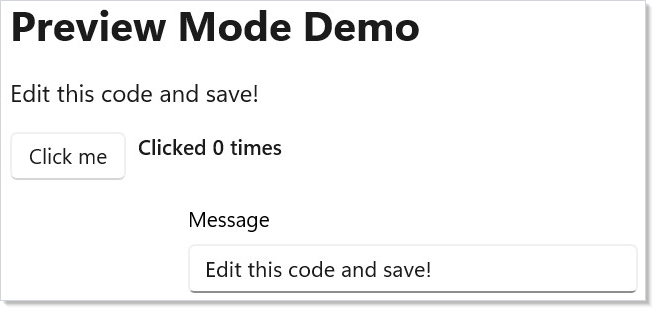
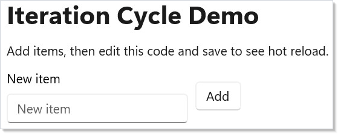

Microsoft.UI.Reactor (Reactor)'s development workflow is built around fast feedback. The
runtime is designed to surface the work it is doing — every render,
every reconcile, every effect, every dispatcher hop — through a small
set of dedicated tools so you can see, attribute, and reason about
what your app is doing without a profiler. The mur CLI, preview
mode under dotnet watch, the MCP server, the VS Code panel, the
in-app dev menu, and the reconcile-highlight overlay
are all variants of the same idea: the runtime publishes its work,
and the inner loop lets you read it. The cost is zero in retail —
every devtools entry point lives behind a build-time capability switch
(Reactor.DevtoolsSupport) plus a session-time opt-in (--devtools app)
so end users never see anything you don't intend to ship.
Dev Tooling¶
Reactor's inner loop centers on dotnet watch and preview mode: you edit
code, save, and see changes in a running window — no manual restart, no
state-resetting class reload most of the time. Surrounding that loop are
five complementary surfaces — the mur CLI, the
MCP server, the VS Code panel, the
in-app dev menu, and the
runtime overlays — each of which lights up only
when you ask for it.
Preview Mode¶
Launch the app from dotnet watch to use Reactor's hot-reload-friendly
preview workflow:
// Program entry point — this is the entire App.cs file:
// ReactorApp.Run<DevToolingApp>("Dev Tooling Demo",
// width: 600, height: 450
// );
//
// Hot reload works when the app is launched under dotnet watch. Devtools
// screenshot capture is enabled by the app project's Reactor.DevtoolsSupport
// switch and activated by launching with --devtools.
The app entry point is an ordinary ReactorApp.Run call; there is no
preview: or devtools: argument. Devtools-specific screenshot capture is
enabled by the app project's Reactor.DevtoolsSupport switch and activated
at launch with --devtools.
Running with Hot Reload¶
Start your app with dotnet watch:
This launches the app and watches your .cs files for changes. When you
save, dotnet watch recompiles and Reactor re-renders the component tree
in place — the same window, the same process. For most edits your live
state survives the reload.
Here's what the preview app looks like running:
class DevToolingApp : Component
{
public override Element Render()
{
var (count, setCount) = UseState(0);
var (message, setMessage) = UseState("Edit this code and save!");
return VStack(16,
Heading("Preview Mode Demo"),
TextBlock(message).FontSize(16),
HStack(8,
Button("Click me", () => setCount(count + 1)),
TextBlock($"Clicked {count} times").SemiBold()
),
TextBox(message, setMessage, placeholderText: "Type something",
header: "Message")
.Width(300)
).Padding(24);
}
}

Edit the message default value or add a new element, save the file, and
watch the window update.
What state survives a reload¶
Reactor migrates live state across a hot reload instead of resetting it.
When you save, the runtime re-runs Render() against the existing
RenderContext and reconciles the result onto the live
controls. Hook cells are matched by call order, so UseState,
UseReducer, UseRef, UseMemo, and UsePersisted keep their values
as long as the hook sequence is unchanged. When you edit a record or
class that a hook stores, the runtime migrates the value field-by-field
onto the new shape; fields it can't map are dropped (with a log line)
rather than throwing. When you rename or change the type of a component,
Reactor migrates the subtree onto the new component instance, preserving
its hook state and the underlying WinUI controls.
| Edit you make | What happens to state |
|---|---|
Change a Render() body, add/remove/reorder elements |
Preserved — controls patched in place |
| Edit a value-type or record stored in a hook | Preserved — migrated field-by-field; unmappable fields dropped |
| Rename a component type / change its identity | Preserved — subtree migrated onto the new instance |
Change a stored value's field type, such as int → Optional<int> |
Not migrated — the hot-reload copier matches fields by name and compatible type; restart or remount to cross the schema boundary |
| Add, remove, or reorder hook calls | Reset — the hook list is cleared and re-mounted fresh |
The last row is the unavoidable case: changing the hook shape means the old values can't be re-keyed onto the new layout, so Reactor runs pending cleanups and re-mounts hooks from scratch to keep the loop alive instead of leaving you at an error fallback.
Caveat: Effects whose dependencies didn't change across a reload keep the cleanup closure they captured from the previous instance. This matches React's identity semantics and is harmless for state-capturing effects, but if an effect must re-run on every reload, give it a dependency that changes. For state you explicitly want to survive even a hook-shape change, use
UsePersistedwithPersistedScope.Windowor store the value in anObservable<T>field — see persistence.
When migration misbehaves¶
State migration is best-effort. If an unusual edit leaves a component in a
bad state, the recovery is a full restart: stop dotnet watch and start
it again, which remounts every hook from scratch. The runtime's own
"lose everything, remount fresh" path (HotReloadService.ResetAllContexts)
is internal to the framework and runs automatically when a hook-shape
change is detected — it is not an API your app calls. Reach for a
restart only when the targeted migration above doesn't produce the
result you expect.
NativeAOT builds¶
State migration relies on .NET Hot Reload, which is only available in
JIT debug builds. Under NativeAOT (PublishAot=true)
MetadataUpdater.IsSupported is false, so the whole migration subsystem
is statically dead and trims away — there is no hot-reload loop and no
overhead in a published app.
Function Component Entry Point¶
For quick experiments, skip the class entirely. Pass a lambda to
ReactorApp.Run:
// Alternative: inline function component, no class needed
// ReactorApp.Run("Quick Test", ctx =>
// {
// var (n, setN) = ctx.UseState(0);
// return VStack(12,
// TextBlock($"Count: {n}").FontSize(20),
// Button("+1", () => setN(n + 1))
// ).Padding(24);
// }, width: 400, height: 300);
This is useful for throwaway prototypes or testing a single interaction. You get the same hot-reload behavior — edit the lambda, save, see the result. The recipes folder collects more elaborate examples that fit this shape.
The mur CLI¶
mur is Reactor's repo-aware command-line tool. It is the canonical
entry point for the doc pipeline, the localization workflow, the
devtools server, and a handful of repo-maintenance utilities. The
subcommands map one-to-one to the workflows below.
| Subcommand | Purpose | Common invocation |
|---|---|---|
mur docs compile |
Compile the docset (templates + doc apps → docs/guide/) |
mur docs compile |
mur docs check-tier |
Run only the tier lint, without cross-link / reference / emit | mur docs check-tier --topic hooks |
mur docs render-diagrams |
Render .mmd Mermaid diagrams to .svg for fast inner-loop iteration |
mur docs render-diagrams --topic architecture-overview |
mur docs new-diagram <topic> <id> |
Scaffold a new Mermaid .mmd for a topic |
mur docs new-diagram hooks slot-table |
mur loc |
Run the localization pipeline (extract, translate, validate, status, prune) |
mur loc extract |
mur devtools |
Launch the project with --devtools run, supervise reloads, and host the MCP endpoint |
mur devtools |
mur check |
Repo-health checks (cref validity, namespace policy, "did you mean" suggestions) | mur check |
mur doctor |
Verify the install — SDK, mur, local feed, template, plugin |
mur doctor |
mur upgrade |
Re-pack framework + templates and refresh the plugin after a git pull |
mur upgrade |
mur figma watch |
Poll a Figma file for design changes | mur figma watch |
mur pack-local / mur clean-local |
Package / clean the local NuGet feed for source-built framework smoke tests; the app template defaults to the public Reactor preview unless --MSUIReactorVersion is supplied |
mur pack-local |
Beyond the subcommands there are four top-level options worth knowing:
mur --create <Name> scaffolds a new Reactor project, mur --skill
prints the embedded SKILL.md agent reference, mur --api prints the
reactor.api.txt signatures index, and mur --regen-api regenerates
that index from a source checkout.
mur docs compile is the workflow you reach for most often. See
the doc-pipeline contributor guide
for the full surface and the --validate-only, --no-screenshots
(alias --skip-screenshots), --skip-diagrams, --no-build,
--skip-reference, and --tier <stub|solid|comprehensive>
flags that make the inner loop fast.
MCP Server¶
mur devtools launches your project with --devtools run, supervises
it across reloads, and pins a Model Context Protocol
endpoint that an external agent or editor can attach to. The endpoint
surfaces the running app, not the repo: window list, visual tree,
screenshots, hook state, log ring buffer, and a set of UIA-backed
verbs (click, type, focus, toggle, select, scroll, wait)
that drive the live UI.
mur devtools # launch + supervise; prints MCP_ENDPOINT
mur devtools --mcp-port 9000 # pin the port across reloads
mur devtools --print-config # emit MCP config for Claude Code / VS Code / Copilot
The same verbs are available from the CLI without an agent — each one attaches to the running session through lockfile discovery:
mur devtools tree --view summary
mur devtools screenshot --out shot.png
mur devtools click "Button[Increment]"
mur devtools session list
There is no mur devtools serve subcommand, and nothing is
auto-started by dotnet watch — mur devtools is the launcher, so
run it instead of dotnet watch run when you want agent integration.
The deeper protocol surface lives in DevTools Internals.
VS Code Panel¶
The Reactor VS Code extension lives in src/vscode-reactor/ and provides
a side panel that:
- Lists the running app's component tree.
- Highlights the source line for any element you click in the tree.
- Renders the latest screenshot capture next to your editor (the same PNGs the doc pipeline produces).
- Toggles a References overlay that draws the app's reactive
reference graph —
descriptor.Reference/.ReferenceList, thebinding.Referencebridge, and modifier edges such as.LabeledByor.XYFocusDown— and flags reference cycles and perpetually-null (unresolved) references as diagnostics. See focus & input internals. - Exposes a "compile docs" button that shells out to
mur docs compile.
The extension talks to the MCP endpoint (above), so a panel session is
just a long-lived mur devtools process plus a UI on top. Reactor has
no special editor requirement beyond the standard C# Dev Kit — the
panel is additive. For the interactive Visual Studio alternative that
embeds the real WinUI surface instead of streaming screenshots, see
Visual Studio Embedded Preview.
When you use Reactor: Connect to Preview against an already-running
preview process, enter both the CAPTURE_PORT=... and CAPTURE_TOKEN=...
values from that process's output. The capture server requires the bearer
token before any endpoint probe, including /status.
In-App Dev Menu¶
For the dev surface that lives inside a running app — a "Dev" item
in the titlebar, debug overlays you can toggle, one-off commands —
Reactor exposes three small primitives: UseDevtools(),
DevtoolsMenu(...), and Observable<T>. Two independent signals
combine:
- Build-time capability — add the feature switch to the app project:
<ItemGroup>
<RuntimeHostConfigurationOption Include="Reactor.DevtoolsSupport"
Value="true" Trim="true" />
</ItemGroup>
This is a capability gate — it does not by itself show any dev UI. Samples typically enable it only in Debug builds so Release/AOT binaries keep the devtools code trimmed.
- Session opt-in — run the app with
--devtools app:
UseDevtools() returns true only when both are present. It is a
RenderContext extension, so you call it from a
function component's ctx — or from a helper you hand
the ctx to, provided that helper is itself named Use*, since
REACTOR_HOOKS_005 only permits hook calls from
Render() or a Use* method — and gate the dev-only element with a
ternary:
static class DevGate
{
// UseDevtools() is a RenderContext extension, so it is reached from a
// function component's ctx (or any helper you hand the ctx to) — there is
// no Component-level forwarder. It returns true only when BOTH the
// Reactor.DevtoolsSupport build switch and `--devtools app` are present.
//
// The helper is named Use* because it consumes a hook slot: REACTOR_HOOKS_005
// only permits hook calls from Render() or a Use*-named method, so a helper
// called `Shell` here would warn in any project that copies this.
public static Element UseShell(RenderContext ctx)
{
var dev = ctx.UseDevtools();
return VStack(8,
MainContent(),
dev ? DebugOverlay() : Empty()
);
}
private static Element MainContent() => TextBlock("App content");
// Only *constructed* when dev is true. In retail the ternary costs one
// bool read plus one branch — no element tree, no children reconciled.
private static Element DebugOverlay() =>
TextBlock("debug overlay").Opacity(0.6);
}
DebugOverlay() is only constructed when dev is true. In retail
that line costs one bool read plus one branch — no element tree
allocated, no children reconciled. The cost model carries over to
DevtoolsMenu, which renders itself as a
titlebar item only when UseDevtools() is true:
static class DevMenu
{
public static Element UseTitleBar(RenderContext ctx)
{
// Subscribe during render — not inside the menu builder. The builder
// lambda runs when the flyout opens, which is not a render pass, so a
// hook call in there would break hook ordering.
//
// Named Use* for the same reason as DevGate.UseShell: it consumes a
// hook slot, which REACTOR_HOOKS_005 requires be done from Render() or
// a Use*-named helper.
var debugUI = ctx.UseObservable(AppFlags.DebugUI).Value;
return HStack(8,
TextBlock("My App"),
// DevtoolsMenu renders itself as a titlebar item only when
// UseDevtools() is true, so the same cost model carries over.
DevtoolsMenu(() => new MenuFlyoutItemBase[]
{
ToggleMenuItem("Debug UI", debugUI,
v => AppFlags.DebugUI.Value = v),
MenuSeparator(),
MenuItem("Clear cache", () => CacheService.Clear()),
MenuItem("Slow mode off", () => AppFlags.SlowMode.Value = false),
})
);
}
}
// Stand-in for whatever your app actually caches.
static class CacheService
{
public static void Clear() { }
}
Observable<T> is the lightweight INPC cell that backs flags like
AppFlags.DebugUI. Declare them as static readonly fields:
// Observable<T> is the lightweight INPC cell that backs dev-only flags.
// Declare them as static readonly so every component shares one instance.
public static class AppFlags
{
public static readonly Observable<bool> DebugUI = new(false);
public static readonly Observable<bool> SlowMode = new(false);
public static readonly Observable<bool> ForceDark = new(false);
}
Any component that wants to react to changes subscribes via
ctx.UseObservable(AppFlags.DebugUI).Value during render — not
inside the DevtoolsMenu builder lambda, which runs when the flyout
opens rather than during a render pass. See
Advanced Patterns for the broader observable-binding
story.
Runtime Overlays¶
The reconcile-highlight overlay attaches to a running app when devtools are on:
- Reconcile-highlight overlay. Flashes a rectangle around any element that the reconciler patched on the most recent render. Useful for catching unintended re-renders (the Rules of Reactor page covers the most common causes).
The overlay renders under the DevtoolsMenu toggle group. It is
zero-cost when off.
The Iteration Cycle¶
The full inner loop:
- Run
dotnet watch runin your terminal. - Edit a component in your editor (with the VS Code panel open if you want screenshots and the component tree alongside).
- Save the file —
dotnet watchdetects the change and recompiles. - See the updated UI in the running window.
No build step to invoke manually. The app stays running and the window stays positioned where you left it.
class IterationDemo : Component
{
public override Element Render()
{
var (items, updateItems) = UseReducer(new List<string>());
var (input, setInput) = UseState("");
return VStack(12,
Heading("Iteration Cycle Demo"),
TextBlock("Add items, then edit this code and save to see hot reload."),
HStack(8,
TextBox(input, setInput, placeholderText: "New item",
header: "New item")
.Width(200),
Button("Add", () =>
{
if (!string.IsNullOrWhiteSpace(input))
{
updateItems(list =>
{
var next = new List<string>(list) { input };
return next;
});
setInput("");
}
})
),
ForEach(items, (item, i) => TextBlock($" - {item}").WithKey($"{i}-{item}"))
).Padding(24);
}
}

Patterns¶
Per-feature debug flag with a Dev menu toggle¶
Declare a flag as an Observable<bool> in a static class, expose it
through the Dev menu's ToggleMenuItem, and read it from any component
via ctx.UseObservable(...). Flipping the flag re-renders every
subscribed component — no event-wiring boilerplate. The pattern scales
to a dozen flags without a config UI.
Headless screenshot capture for docs¶
The same devtools plumbing the doc pipeline uses is available to
your own app: enable Reactor.DevtoolsSupport in the app project and
launch the app with --devtools run so the screenshot harness can
capture the window. See
docs/contributing/doc-pipeline.md
for the harness contract. This is how every page in the docset gets
its screenshots automatically without an author launching the app by
hand.
Common Mistakes¶
Enabling the switch without a session gate¶
Forgetting that Reactor.DevtoolsSupport is the capability gate
and --devtools app is the activation gate is the most common
mistake. A binary built with the switch enabled shows no dev UI to a
user — the session-time flag does. If you want devtools trimmed out of
retail, keep the switch Debug-only instead of enabling it for Release/AOT.
Wiring real app state through UseState during inner-loop work¶
UseState resets on every hot reload. If your loop depends on a
30-second login flow to reach the screen you are iterating on, store
the relevant state in UsePersisted (Window scope)
or in an Observable<T> field. The hot reload picks up the new code
without resetting your state.
Treating the in-app dev menu as the only devtools surface¶
The mur devtools MCP endpoint and the VS Code panel are
separate surfaces from the in-app menu. They observe a running
app from the outside; the in-app menu observes the runtime from
inside the app itself. Build-time capability (Reactor.DevtoolsSupport)
plus --devtools app opens the in-app menu, while the external MCP
endpoint requires launching through mur devtools instead of a bare
dotnet watch run — don't expect it to start automatically.
Tips¶
Keep dotnet watch running. Don't stop and restart it between edits. It handles recompilation and reconnection automatically.
Use small components. Smaller components reload faster because less of the tree needs to be rebuilt. Extract pieces early.
Check the terminal. When hot reload fails (usually a syntax
error), dotnet watch prints the error. Fix it and save — it retries.
Use function components for experiments.
ReactorApp.Run("Test", ctx => ...) is the fastest way to try an
idea. No class boilerplate.
ARM64 builds for benchmarks. If you're on ARM64 hardware, build
with dotnet run -r win-arm64 to get native performance numbers.
Next Steps¶
- Getting Started — Previous: create your first app and learn the basics
- Components — Next: component classes, props, function components, composition
- Hooks — Learn the state management primitives used inside components
- Testing — Headless renderer fixtures, snapshot tests, async test patterns
- DevTools Internals — How the dev menu, overlays, and MCP server are implemented